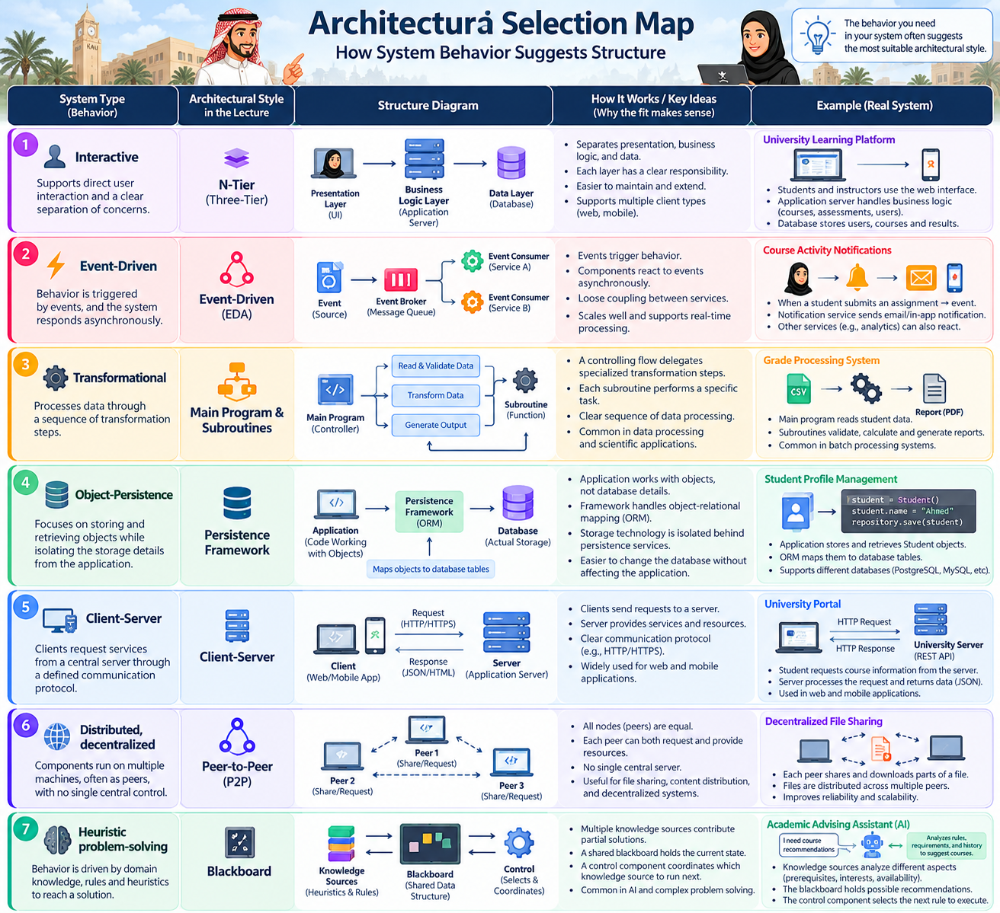

Topic 06 · Lesson 04
System Type → Architectural Style
Architectural style selection becomes easier when you first understand the system’s dominant behavior.
4of 10 pages
Learn the source mappings and understand the selection logic: objectives → system type → suitable style → adaptation or custom design.
Architecture selection map
Behavior suggests structure

Decision logic
A style is a reusable structure — not a rigid template
1Objectives
What qualities matter?
2System type
What behavior dominates?
3Repository
Is a suitable style available?
4Adapt
Tailor the style to the application.
5Custom if needed
Use partial designs and patterns deliberately.
Avoid the memorization trap
Do not stop at the table
✕ Weak answer
“Interactive = N-Tier.”
→
✓ Strong engineering answer
“The subsystem is interaction-heavy, so separating UI, coordination, business behavior and persistence in tiers supports responsibility separation and change control.”
Remember
Classify first. Choose second. Justify always.